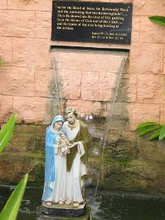
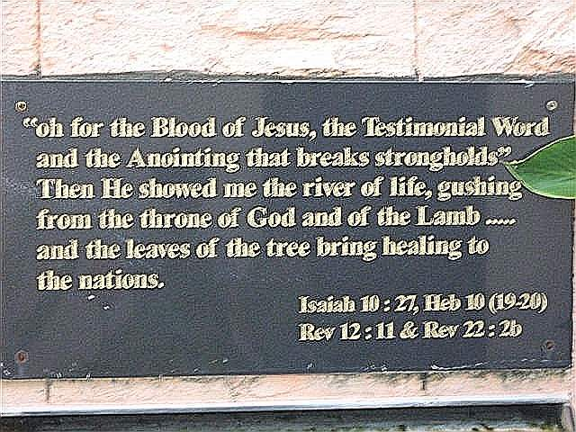

Psalm 116:15 Precious in the sight of the LORD is the death of his saints.
I am very aware that very soon, to be precise, the 28th of August, will be my dear Mum’s 25th anniversary when she was called and transferred on to be with our Lord.
Oh! it’s comforting and refreshing to note that because of the Resurrection from the dead of Our Lord Jesus Christ of Nazareth, He demolished and destroyed our last enemy, death itself.
1 Corinthians 15:26,54b-55
The last enemy to be destroyed is death.
then the saying that is written will come true:
"Death has been swallowed up in victory."
"Where, O death, is your victory?
Where, O death, is your sting?"
Our Lord made sure that before my mother closed her eyes permanently on the face of this earth she managed to see and talk to all her family members. If there was one member of my family who was already spiritually prepared, spirit, soul, body and mind to meet our Lord and Saviour Jesus Christ of Nazareth, than it’s got to be my dear mother. For I was a witness to her prayer and spiritual life.
a) Everyday whilst our food nourishments were provided for, my mum also made sure that daily on a parallel basis we prayed as a family. It did not matter whether troubles or tribulations or failures or depression or oppression or sickness or accidents or quarrels or fights or we acted as hypocrites along the way, we still prayed and my mother made sure we did.
b) Everyday, it did not matter whether it rained heavily or the sun blazed brightly and fiercely, my Mum still walked up to church. On our school holidays we were commandeered to go to church. As an individual you do not disobey Mum’s orders.
c) Sometimes I used to see my mum walking on her knees, moving from the back of the church to the front on her knees. Whilst as a schoolboy, whenever I saw my mum doing this act, I must confess that I used to get very embarrassed to note that my schoolmates were looking at her and laughing. My evangelical friends might be wondering, why on earth did my mum do this act, when Jesus paid a total, complete sacrifice on the cross for our salvation and we do not need to do any other substitute act for salvation.
I sometimes ask myself what did the apostle Paul mean to say or express in this verse:
1 Corinthians 9:26-7
Therefore I do not run uncertainly (without definite aim). I do not box like one beating the air and striking without an adversary.
But [like a boxer] I buffet my body [handle it roughly, discipline it by hardships] and subdue it, for fear that after proclaiming to others the Gospel and things pertaining to it, I myself should become unfit [not stand the test, be unapproved and rejected as a counterfeit].
I never asked my mum why she walked on her knees. The only way I can reconcile this is in this manner: was she trying to experience a minutia of the pain that Jesus went through on the cross, in case she had forgotten that she was saved through a heavy price, (not cheap) paid for by her Precious Saviour. Did she need to do this act to constantly remind herself that the Son of God came and died for her?
I will definitely ask her in Heaven, meanwhile I will meditate on this scripture:
Hebrews 12:1-2
Therefore, since we are surrounded by such a great cloud of witnesses, let us throw off everything that hinders and the sin that so easily entangles, and let us run with perseverance the race marked out for us.
Let us fix our eyes on Jesus, the author and perfecter of our faith, who for the joy set before him endured the cross, scorning its shame, and sat down at the right hand of the throne of God.
Tribute Published in New Sunday Times, Sunday, August 28th 2005.
It was an honour and a blessing to our Dear Mum that the late 1st Malaysian Archbishop of Kuala Lumpur, Dominic Aloysius Vendargon, personally attended Mum's funeral. Although he was unwell, he wanted to come for he knew my Mum very well, hailing from Jaffna, Northern Ceylon. All related closely.


19th June 2025, just heard the sad news that a nephew of our late Archbishop, Dr. Lawrence Martin Vendargon who had a Private Medical Practice in Malacca, passed away peacefully.
I remember visiting the Vendargons in Malacca (formerly classic Portuguese Town), the late Joseph Ignatius Vendargon & Theresa Matilda Ponniah during the 1970's with my late parents.
The visits were always memorable.
Usually our first point of call was the town of Seremban visiting Uncle Cyril & Aunty Stella Nicholas. Followed by a quick visit to our late Aunty Madge and her daughter Judy Ponniah.


The gorgeous beautiful radiant flowers covering our dear Mum Jeyamani Theresa Nicholas’s burial place is just an indication of the love and affection people held for her. The flowers were still fresh from visitors paying their respects. They brought clusters of Hibiscus- the national flower of Malaysia and different varieties of roses. The colours and fragrant smells were enchanting with many of them in full bloom. There were Jejarum (Needle flower), different varieties and colourful species of Bougainvilles (Bunga kertas), yellow alamandas, mesmerising orchids, lantanas, bird of paradise flowers, rhododendrons and chrysanthemum----this flower in Malaysia is locally known as “Mum” and there were other varieties too.

This water fountain was built in honour of our Mum, Jeyamani Theresa Nicholas. It speaks of how much our Mum loved the Scriptures. The water is continually flowing over the plaque.

'When my time to die comes, an angel will be there to comfort me. He will give me peace and joy even at the most critical hour, and usher me into the presence of God, and I will dwell with the Lord forever. Thank God for the ministry of His blessed angels!'
A quote from Billy Graham.

Anton delivered a sacred eulogy at his Dad's farewell service, the former Director and Manager of Oriental Bank Klang, Selangor.
Within the talk he sensed and spoke a prophetic word for the year 2016.
Dad would have been very pleased to witness how the whole service was conducted.
You need to view this video. See why Anton spoke with such intense passion. You will catch the sincerity of how much our Mum and Dad meant for the Nicholas family. Tears were shed. How could they not be!
Posted 10 July 2015.
Under a strict Vatican ruling the video eulogy below should not have lasted longer than five minutes under the Pastoral guidance of the local Parish Priest. Thank God the former Bishop of Penang was kind to him. Anton spoke for more than thirteen minutes. He broke all conventions.
Catch the moment when the Holy Spirit manifested His Presence whilst Anton was speaking especially regarding his family. A particular moment when tears were shed.